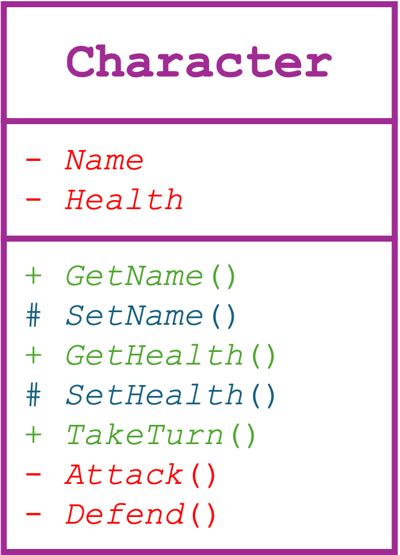
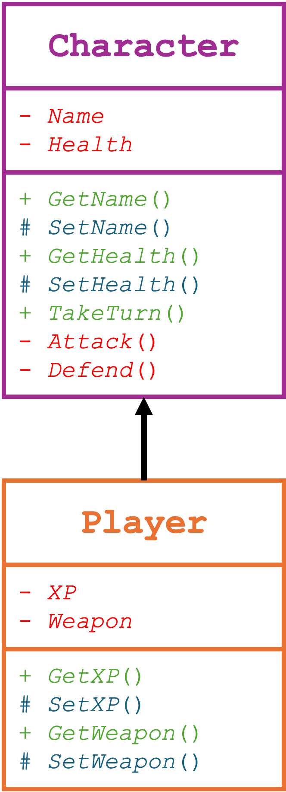
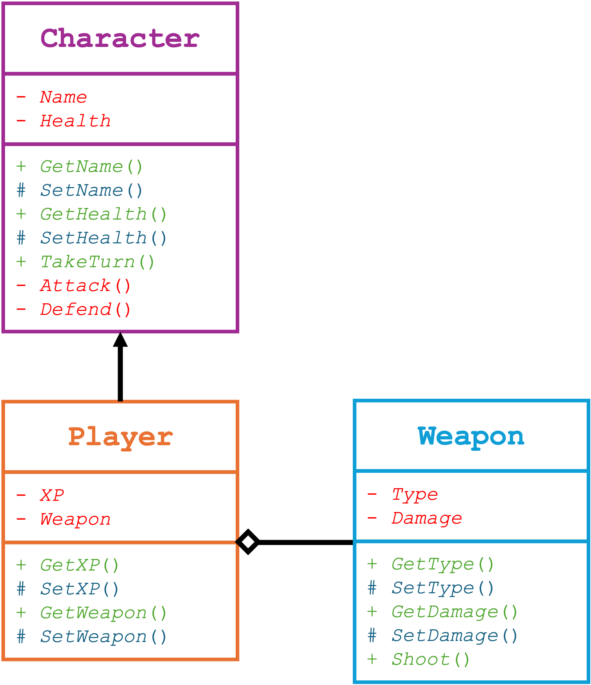

GCSE Link: None
 Unified Modelling Language (UML) is a way of representing relationships between classes in OOP.
Unified Modelling Language (UML) is a way of representing relationships between classes in OOP.
A class is shown in a box with its identifier at the top. The attributes are shown below the identifier, and the the methods after that. Each attribute or method
Diagram 1 shows a UML class diagram representing a single class.
 Diagram 1
Diagram 1

Inheritance is shown with an arrow pointing from the child class to the parent class. Only the additional attributes and methods that are not present in the parent class should be shown in the child class.
Diagram 2 shows inheritance in a UML class diagram.
 Diagram 2
Diagram 2

Association is shown using a line from the contained class to the container class with a diamond at the end (touching the container class). Composition uses a filled diamond, while aggregation uses a hollow one.
 Add a
Add a Weapon class which has Type
and Damage attributes and a Shoot()
method to Diagram 2.
